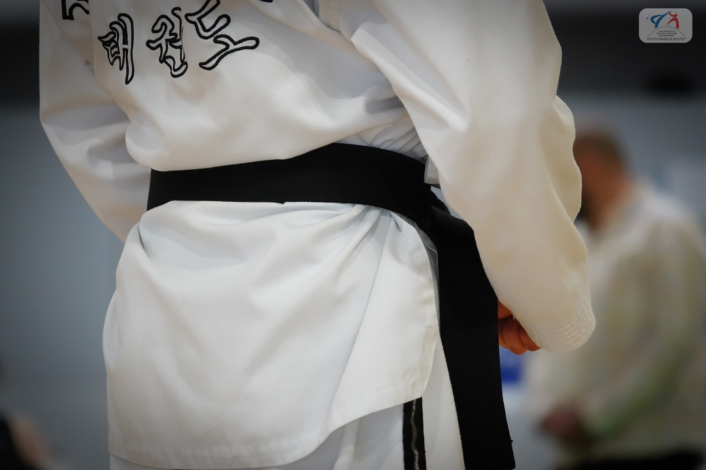
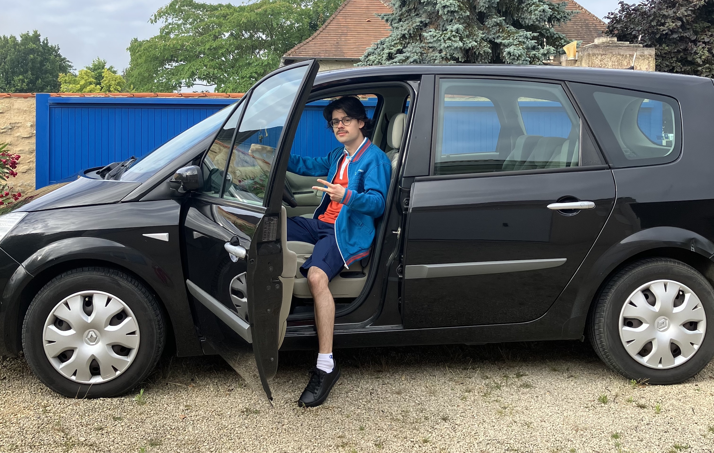

Je pratique le Taekwondo depuis l'âge de 6 ans, au club Sojjok Kwan à Niort. Il s'agit d'un art martial sud-coréen dont la création remonte aux années 1950. Cet art-martial m'a appris à avoir confiance en moi. En juin 2022, j'ai passé un examen pour obtenir le grade de 1er Dan, le premier grade de la ceinture noire. J'ai ensuite passé le grade de 2ème Dan en avril 2024, en parallèle de mes études. Par ailleurs, j'ai aussi participé à une démonstration olympique le 2 juin 2024, à l'occasion du passage de la flamme olympique.
Depuis tout petit j'aime la musique. J'ai pris des cours de guitare pendant des années avant d'arrêter pour avoir plus de temps pour les études. Cependant, j'ai toujours le temps d'écouter de la musique. J'aime beaucoup le groupe Men I Trust, un groupe canadien de musique indie. Voici un de leurs morceaux !
Dans le cadre des cours de PPP (Projet Personnel et Professionnel), j'ai du créer un dossier regroupant les résultats de tests de personnalité, afin de mieux me connaître moi-même. Voici un résumé de ce dossier :
Les 16 personnalités (MBTI) : Je me reconnais dans le profil INTJ, dit “architecte”, une personnalité marquée par une forte autonomie, un esprit stratégique et une quête constante de compréhension et d’amélioration. J’ai tendance à réfléchir en profondeur, je préfère souvent travailler seul, et je me distingue par une intelligence analytique et une grande curiosité intellectuelle. Je suis conscient de l’importance de développer aussi mon intelligence émotionnelle.
Test ISALEM97 : Ce test montre que mon style d’apprentissage est intuitif, mêlant réflexion et expérimentation. Je navigue entre une approche réflexive et pragmatique : je suis capable d’analyser les situations sous plusieurs angles et d’agir spontanément, même si cela peut parfois me rendre hésitant ou dispersé.
Big Five (OCEAN) : Ce test révèle une grande ouverture d’esprit, une créativité marquée et une forte empathie, mais aussi une introversion importante, une organisation inégale, et une sensibilité élevée au stress. J’apprécie les idées nouvelles, les arts, et je me montre bienveillant, tout en ayant besoin de solitude pour me ressourcer.
En conclusion, ces trois tests dressent un portrait cohérent de moi : je suis une personne curieuse, indépendante, analytique et créative, dotée d’une vie intérieure riche et d’une forte sensibilité émotionnelle. Ces résultats m’aident à mieux cerner mes forces et mes défis personnels, et à avancer en connaissance de moi-même.

Futuroscope : durant l'été 2023, j'ai eu la chance de pouvoir travailler au Futuroscope en temps que conseiller en ventes. J'avais deux postes différents. J'étais au plateau d'appels téléphoniques pour organiser les séjours des visiteurs, ainsi qu'à l'agence à l'entrée du parc, où mon travail consistait à corriger les erreurs de réservations des visiteurs. J'ai re-travaillé au Futuroscope durant les vacances de noël 2023 et l'été 2024, période de l'ouverture de l'Aquascope. Ce travail saisonnier m'a permis de voir l'envers du décor d'un grand parc d'attraction ainsi que de me procurer une aisance relationelle.